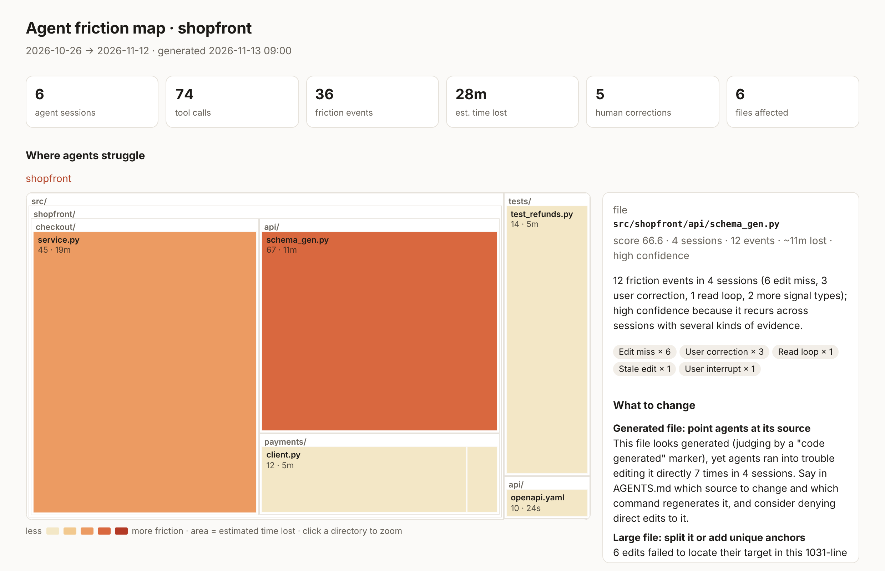

Fewer wasted turns and tokens
The agent stops trying what never works here: three failing pytest runs before make test, six missed edits to a generated file.
agent-friction reads the transcripts your coding agent already leaves on disk, finds what keeps going wrong in this repository, and turns it into a short list of fixes, each with the evidence behind it. Each fix removes a round trip that kept coming back: fewer wasted turns and tokens, faster sessions, fewer corrections from you.
demo instead of scan/agent-friction:scan
Every failed command, missed edit and retry is a round trip your agent pays for in tokens and minutes. The report counts them per file and command, with an estimate of the agent time each one cost (time is estimated; tokens are not measured), so you can fix the costliest first.
The agent stops trying what never works here: three failing pytest runs before make test, six missed edits to a generated file.
It can get it right the first time, because the line it needed is now in AGENTS.md or CLAUDE.md.
The rule you keep typing ("use PaymentClient") is written down once, where every future session reads it.
agent-friction compare measures a later scan against the earlier one, file by file and command by command.
None of these is worth a bug report on its own. Together they are the tax your team pays on every agent session, and nobody writes them down.
The agent runs pytest, it fails, and the job only gets done with make test. Seven failures, in four different sessions.
Six edits miss their target in a 1,031-line file that says it is generated, when the change belonged in openapi.yaml.
"No, I said use PaymentClient." The same rule, typed again in another session, because it is written down nowhere the agent reads.
Run it inside any repository you have used a coding agent on. Scores rank how reliably something hurts across sessions, so one bad afternoon is noise and the same failure in five sessions is a pattern. Below is the real output of agent-friction demo, abridged. Advice resting on fewer than 5 events is marked as thin evidence and kept off this list.
$ agent-friction demo agent-friction · shopfront 6 sessions · 74 tool calls · 23 friction events (+10 weak) · ~9m lost · 5 human corrections What to fix first 1. src/shopfront/api/schema_gen.py: Generated file: point agents at its source 2. pytest: Tell agents to use `make test` `pytest` failed 7 times in 4 sessions; 5 times the agent then got the same job done with `make test`, and `pytest` did not work later in those sessions. 3. src/shopfront/checkout/service.py: Write down the rule the human keeps repeating Files where agents struggle score path sess events lost █████▋ 56.4 src/shopfront/api/schema_gen.py 4 11 4m ████▋ 46.5 src/shopfront/checkout/service.py 3 5 2m
The report is not the point. The fix is, and knowing whether it worked.
Find the hotspots, then ask why one scores high, with every event quoted.
agent-friction scan -o map.html agent-friction show pytest
The Claude Code plugin proposes each change with its evidence and applies only what you approve. Any other agent: scan -f prompt prints the same fixes as a task.
# in Claude Code, once: /plugin install agent-friction --marketplace nurettincoban/agent-friction # then, in any repository: /agent-friction:fix
Compare before and after, per session that actually touched each target. Fail a job on regressions.
/agent-friction:compare # or, from a shell: agent-friction compare \ before.json after.json
/insights?/insights coaches how you and Claude work together. agent-friction finds where this repository trips agents up, then diagnoses each cause against the repository. We tested both on held-out sessions written blind by independent authors, graded blind against keys committed before any run; every report is published.
/insights | agent-friction | |
|---|---|---|
| Sessions read | A sample (9 of 16, 9 of 15 in our tests) | Every session that touched the repository |
| Problems found, two held-out sets (of 16 each, 3 runs) | 11 to 13 | 13 to 16 (/agent-friction:scan) |
| Fixes that work as given (of 8 each) | 5 to 6 | 7 to 8 |
| Wrong statements per report | 2 to 4 | 1 to 5, about the same |
| Cause found in | What the session says | The error output and the repository's own files, with the line |
| Same input, same output | No | The scan, yes, so you can compare before and after |
The scan makes no model calls: every signal is a fixed rule over the transcript with its exact definition, attribution and known false positives written down in docs/signals.md. A red test the agent then fixes is normal work and is not counted.
Transcripts contain your code and sometimes your secrets. agent-friction is built for that.
--no-excerpts for sharingRemoves all transcript text. Paths, counts and timestamps remain; project-specific names become stable hashes.Built for Claude Code first, open to every agent through a small, documented format.
| Source | Support |
|---|---|
| Claude Code | Native and auto-discovered, including subagents and resumed sessions |
| Any other agent | Convert to the generic JSONL format: one event per line, a few fields |
| Git history | Commits from any agent that marks them (Claude, Codex, Copilot, Cursor, Aider…), even with no transcripts at all |
Run it in a repository, read the top three lines, and let your agent fix them.